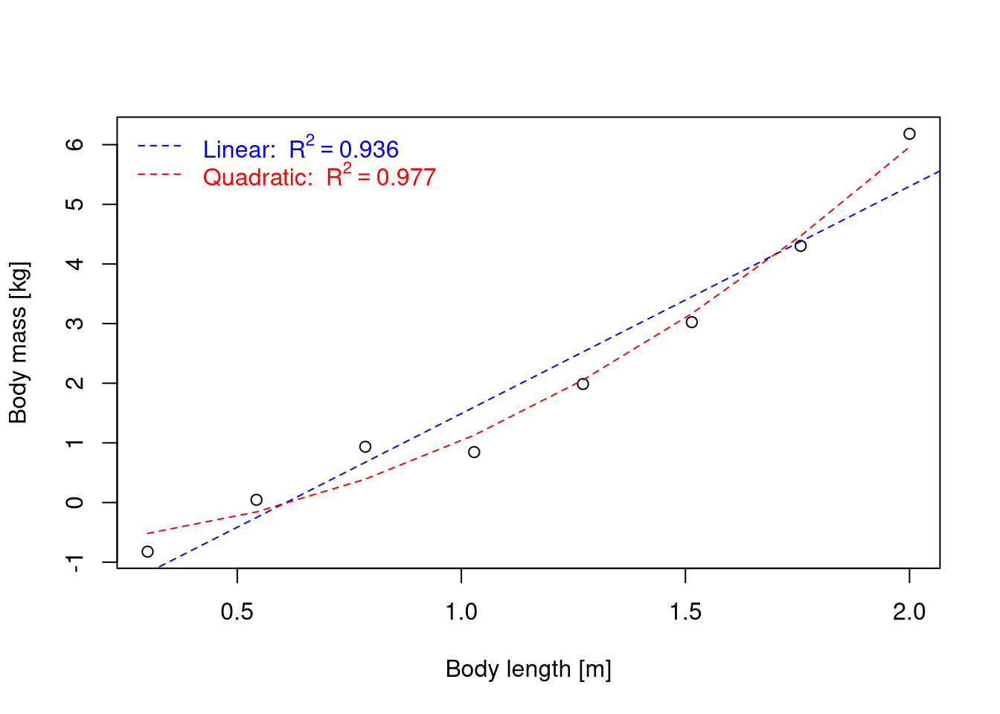
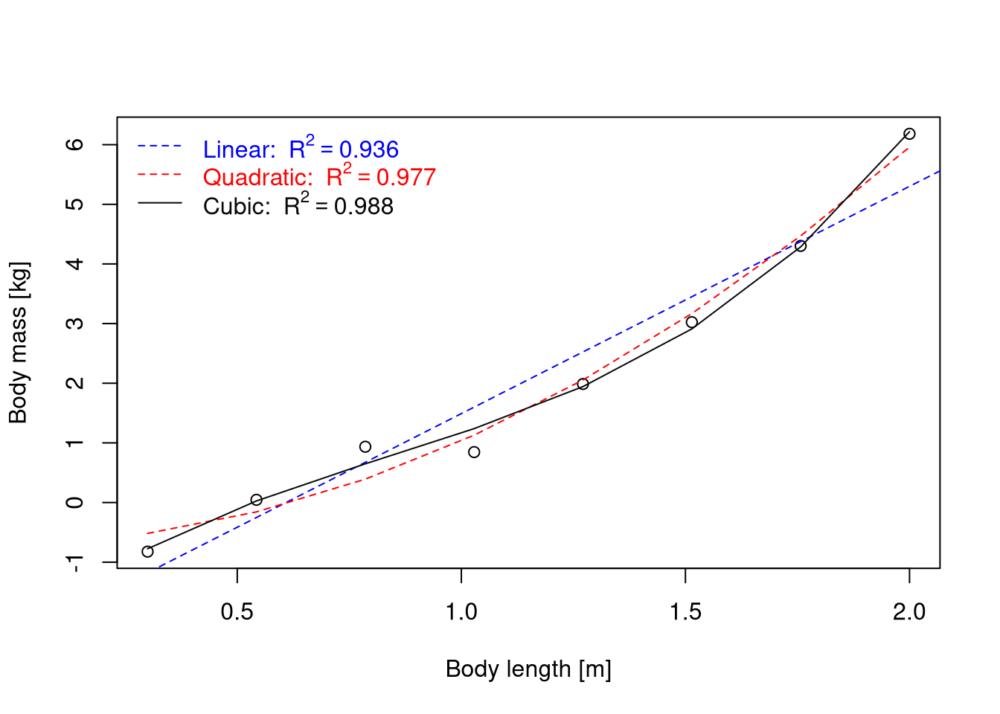

capybara <- function(x) x^(2.7)
body_length <- seq(0.3, 2, length.out = 8)
body_mass <- capybara(body_length)+rnorm(8, mean = 0, sd = 0.4)Modellselektion
Warum sind verschiedene Modelle möglich?
Nehmen wir eine kleine Anzahl von Beobachtungen zu Körperlänge und Körpermasse bei Capybaras an.
Code zur Capybara-Erzeugung
plot(x = body_length,
y = body_mass,
xlab = "Body length [m]",
ylab = "Body mass [kg]")
Betrachtet man diese Grafik, könnte man ein lineares Modell recht gut anpassen.
linear <- lm(body_mass ~ body_length)
plot(x = body_length,
y = body_mass,
xlab = "Body length [m]",
ylab = "Body mass [kg]")
abline(a = linear$coefficients[1],
b = linear$coefficients[2],
col = "blue",
lty=2)
legend('topleft', bty='n',
as.expression(bquote(R^2==.(format(summary(linear)$adj.r.squared,
digits=3)))),
text.col = "blue")
Bei der geringen Anzahl von Beobachtungen lässt sich der Zusammenhang durch eine Gerade darstellen, ohne die Tatsachen allzu sehr zu verbiegen. Wir haben aber das Gefühl, dass es nicht das beste Modell ist. Können wir ein besseres Modell erraten? Wie wäre es mit einer quadratischen Gleichung?
quadratic <- lm(body_mass ~ body_length + I(body_length^2))
plot(x = body_length,
y = body_mass,
xlab = "Body length [m]",
ylab = "Body mass [kg]")
abline(a = linear$coefficients[1],
b = linear$coefficients[2],
col = "blue",
lty = 2)
lines(x = body_length,
y = fitted(quadratic),
col = "red",
lty = 2)
legend('topleft', bty='n',
legend = as.expression(c(
bquote("Linear: " ~ R^2==.(format(summary(linear)$adj.r.squared,
digits=3))),
bquote("Quadratic: " ~ R^2==.(format(summary(quadratic)$adj.r.squared,
digits=3))))),
col = c("blue", "red"),
lty = 2,
text.col = c("blue", "red"))
Die rote Linie scheint besser zu passen. Aber wenn wir etwas Physik kennen, würden wir erwarten, dass die Körpermasse mit der dritten Potenz der Körperlänge skaliert und nicht mit der zweiten (die Masse ist proportional zum Volumen, nicht zur Oberfläche). Was passiert also, wenn wir eine kubische Anpassung versuchen?
cubic <- lm(body_mass ~ body_length + I(body_length^2) + I(body_length^3))
plot(x = body_length,
y = body_mass,
xlab = "Body length [m]",
ylab = "Body mass [kg]")
abline(a = linear$coefficients[1],
b = linear$coefficients[2],
col = "blue",
lty = 2)
lines(x = body_length,
y = fitted(quadratic),
col = "red",
lty = 2)
lines(x = body_length,
y = fitted(cubic),
col = "gray3",
lty = 1)
legend('topleft', bty='n',
legend = as.expression(c(
bquote("Linear: " ~ R^2==.(format(summary(linear)$adj.r.squared,
digits=3))),
bquote("Quadratic: " ~ R^2==.(format(summary(quadratic)$adj.r.squared,
digits=3))),
bquote("Cubic: " ~ R^2==.(format(summary(cubic)$adj.r.squared,
digits=3))))),
col = c("blue", "red", "gray3"),
lty = c(2, 2, 1),
text.col = c("blue", "red", "gray3"))
Die quadratische und die kubische Linie unterscheiden sich nur minimal. Es ist sehr schwer zu sagen, welches Modell besser ist. Wenn wir jedoch die Körpergröße von Capybaras vorhersagen wollen, macht es einen Unterschied, welches Modell das richtige ist. Wie können wir das herausfinden?
Log-Likelihood
Das angepasste R² sagt uns nur, wie gut jedes Modell die Daten beschreibt. Um Modelle formaler zu vergleichen, können wir die Log-Likelihood jedes Modells berechnen, d. h. wie wahrscheinlich die beobachteten Daten unter dem angepassten Modell sind. Höhere (weniger negative) Werte bedeuten eine bessere Anpassung.
models <- list(Linear = linear, Quadratic = quadratic, Cubic = cubic)
loglik_table <- data.frame(
Model = names(models),
Parameters = sapply(models, function(m) attr(logLik(m), "df")),
logLik = sapply(models, function(m) as.numeric(logLik(m))),
adj_R2 = sapply(models, function(m) summary(m)$adj.r.squared)
)
knitr::kable(loglik_table,
digits = 3,
row.names = FALSE,
col.names = c("Model", "Parameters", "Log-likelihood", "Adjusted R²"),
align = "lrrr")| Model | Parameters | Log-likelihood | Adjusted R² |
|---|---|---|---|
| Linear | 3 | -6.004 | 0.936 |
| Quadratic | 4 | -1.072 | 0.977 |
| Cubic | 5 | 2.423 | 0.988 |
Akaike-Informationskriterium (AIC)
Die Log-Likelihood verbessert sich immer (oder bleibt gleich), wenn wir Parameter hinzufügen, und bevorzugt daher für sich genommen das komplexeste Modell. Das Akaike-Informationskriterium (AIC) korrigiert dies, indem es die Anzahl der Parameter bestraft: \(AIC = 2k - 2\ln(L)\), wobei \(k\) die Anzahl der Parameter und \(L\) die maximale Likelihood ist. Anders als bei der Log-Likelihood gilt: ein niedrigerer AIC ist besser, und ein komplexeres Modell wird nur bevorzugt, wenn der Gewinn an Anpassungsgüte die Strafe von \(2k\) überwiegt.
AIC-Gewichte
Absolute AIC-Werte hängen von den Daten ab und haben für sich genommen keine Bedeutung; nur Unterschiede zwischen Modellen, die an dieselben Daten angepasst wurden, sind relevant. Diese Unterschiede, \(\Delta AIC_i = AIC_i - AIC_{min}\), können in Akaike-Gewichte umgerechnet werden: \(w_i = \frac{\exp(-\Delta AIC_i / 2)}{\sum_j \exp(-\Delta AIC_j / 2)}\). Die Gewichte summieren sich über die verglichenen Modelle zu 1 und können als relative Unterstützung für jedes Modell gelesen werden, d. h. als Wahrscheinlichkeit, dass es das beste der betrachteten Modelle ist. Ein Gewicht von 0,7 bedeutet zum Beispiel, dass das Modell mit etwa 70 % Wahrscheinlichkeit das beste in der Kandidatenmenge ist. Modelle mit ähnlichen Gewichten lassen sich mit diesen Daten nicht unterscheiden.
aic_table <- data.frame(
Model = names(models),
Parameters = loglik_table$Parameters,
logLik = loglik_table$logLik,
AIC = sapply(models, AIC)
)
delta_AIC <- aic_table$AIC - min(aic_table$AIC)
aic_table$weight <- exp(-delta_AIC / 2) / sum(exp(-delta_AIC / 2))
knitr::kable(aic_table,
digits = 3,
row.names = FALSE,
col.names = c("Model", "Parameters", "Log-likelihood", "AIC", "AIC weight"),
align = "lrrrr")| Model | Parameters | Log-likelihood | AIC | AIC weight |
|---|---|---|---|---|
| Linear | 3 | -6.004 | 18.008 | 0.001 |
| Quadratic | 4 | -1.072 | 10.143 | 0.076 |
| Cubic | 5 | 2.423 | 5.154 | 0.922 |
Caution
R², Log-Likelihood und AIC vergleichen nur die Modelle, die vorhanden sind. Wenn wir nur schlechte Modelle vergleichen lassen, finden wir das am wenigsten doofe Modell darunter. Das doofe Modell mit einem niedrigstem AIC-Wert ist immer noch nicht gut, aber weniger schlecht als die Anderen.